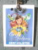
Berck, une semaine complète de cerf-volant, le pied ! Arrivée vendredi soir, je cherche mon enveloppe à l'Office du Tourisme. Déception, pas de tickets du soir cette année, le Festival serait-il en faillite ? Ou bien c'est moi qui ne les mérite plus ! Bah, je ferai sans... mais je me sentirai moins obligé de me forcer à voler, tôt le matin, ou quand les conditions sont difficiles... Un peu moins de cerfs-volants en l'air et un peu plus de farniente, c'est tout. Quant au badge, dire que Gérard m'attaque quand j'écris "cervoliste"... Côté positif, le CVCF aura un cabanon, c'est extra, la marche dans le sable pour ramener tout le bazar le soir au camion m'épuisait !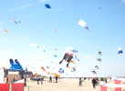
Samedi matin, vent assez fort et pas très chaud ! Les gros gonflables sont déjà en l'air quand j'arrive. Ils n'ont pas de crainte du vent, eux, s'ils tombent sur quelqu'un, il y a juste à dépêtrer...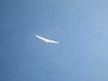
Je mets mon Albatros 1 en l'air, c'est celui qui supporte mieux le vent. Je l'ai un peu modifié, l'aile a une forme qui me satisfait mieux, et les cannes ne risquent plus de se désemboîter, elles sont inversées...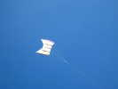
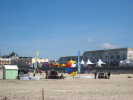
A côté de son cabanon (merci Gérard !), le CVCF a monté son camp, ses bannières, ses banderoles, ses tentes, ses parachutes, ses coccinelles, ses fanions et ses cerfs-volants !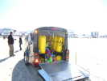
Des Allemands bien équipés, avec une remorque comme celle des Hurricane, et bien remplie de matériel !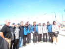
Gérard Clément pose avec quelques teams, comme l'équipe A de la France, en bleu (Iassou l'indestructible, Ramlal Tien, Richard Debré + un)... A gauche David Gomberg soutient l'équipe US !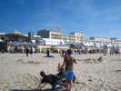
Sous l'Albatros, j'ai mis les fanions CVCF à ma façon avec un lest pour qu'ils soient plus lisibles... Le lest est un gant rempli de sable, et les gamins improvisent un jeu autour avec un gardien et des attaquants ! J'essaierai aussi une très longue bride basse pour que les fanions soient sur la partie verticale du fil. Ca marche bien, mais le rangement est plus complexe...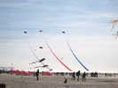
Les gros ne sont quand même pas très nombreux, mais ces immenses flammes meublent bien le ciel d'un élan ambitieux...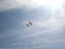
Daniel Guignet est venu avec ses Saconneys pour faire de l'ascension humaine. Il n'a pas peur du vent, mais celui-ci vient de terre et il est trop turbulent pour monter un train stable... Daniel fait joujou quand même en solo...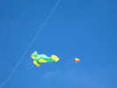
Patrick l'Higuinen a monté son Pyro blanc avec la grenouille qu'il a construite à l'atelier de Somain. On en verra d'ailleurs plusieurs !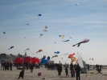
Il fait beau, le public est venu assez nombreux, et il y a aussi pas mal de cerfs-volants en l'air !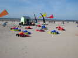
Nos voisins allemands de ColoursInMotion ont créé des crabes amusants : avec leurs petites pattes, ils marchent de côté sur les pointes comme des vrais quand le vent tourne !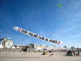
Nous avons récupéré et ainsi pu faire voler la splendide manche du CVCF, qui ne tourne pas, et traîne très peu malgré sa taille immense, merci à Guy...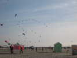
En fin de journée, les pilotables terminent toujours par un grand Mégateam, ici de 24 !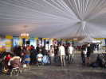
Au soir, utilisation du barnum VIP pour une pizza-partie en l'honneur du mariage de la fille de Mark et Niekol Vercauteren... On commence bien sûr par un petit apéritif en attendant les volontaires partis chercher la pile de pizzas...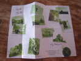
Bart et Ruth ont créé des faire-parts originaux en forme de cartes Michelin, pleins de photos-souvenirs...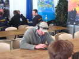
Derrière nous, un compétiteur répète son ballet, la musique sur les oreilles et les mains qui virevoltent...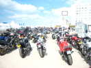
Dimanche, il fait beau, et une grosse concentre de motos a choisi Berck comme point de ralliement...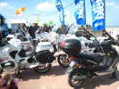
Il y en a même qui se garent n'importe où sur les trottoirs, les PV vont pleuvoir...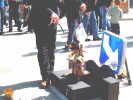
Devant le manège, un marionnettiste anime un violoncelliste avec autant d'âme qu'un vrai musicien !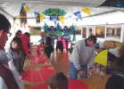
Sur la promenade, un atelier pour enfants animé par le Cerf-Volant Club Celtique (affilié au CVCF). Ils font construire (enfin, ils aident un peu...) de grands Sleds avec 2 trous qui volent très bien... Ils ont seulement dû fermer la tente à cause du vent !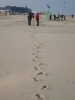
Sur les surfaces, le vent a vite fait d'effacer les empreintes, et on a l'impression de marcher dans un désert perdu...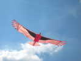
Dans le vent pas trop fort aujourd'hui (pour le moment, mais je devrais l'affaler plus tard...) mon Condor se débrouille bien, et je ferai un grand tour sur la plage avec lui !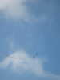
Tiens, ne serait-ce pas l'ami Christian Bécot qui nous rend visite ? Il y aura plusieurs aérophotographes, comme François Périaut, bien sûr, mais aussi Emmanuel Colonnier et Jean-Daniel Chantelauze qui a en outre amené du matériel de l'économat CVCF.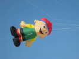
Chez les gros, cet amusant "goal", réellement imposant par sa taille !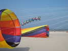
Et bien sûr, des manches à air énormes et de formes et couleurs variées !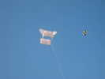
Daniel refait un vol solo pour tâter le vent, pendant que Loïk Lamalle monte un de ses cylindres amusants et stables !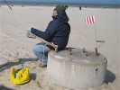
C'est Bruno Claes qui s'est collé à la ficelle, on ne peut pas laisser un tel engin sans surveillance. Notez la taille de la poulie !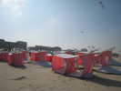
Finalement, tous les Saconney regagnent la terre ferme, leur position inversée les plaque au sol... sauf lors d'une forte rafale qui en décollera un qui roulera plus loin pour se coincer dans la clôture... avec quelques dégâts aux bambous...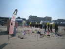
Jardins du V..t : Emmanuel Duba a encore augmenté son parc de chats. Il a organisé un concours pour faire deviner le nom d'une nouvelle création, une tresse à tête de chat...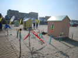
Fernando a créé de nouvelles fleurs. Son poisson est absent pour le moment !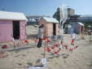
Patricia Ghesquière améliore doucement son jardin, spécialisé en récupération de matériels : cuillères en particulier qui constituent des pales de moulinet très bien profilées...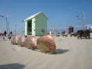
Pierre Dunoyer a monté un petit jardin avec des animaux en métal découpé confectionnés en Indonésie !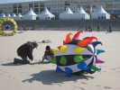
Patrick installe sa manche ColoursInMotion. On n'a pas revu cette année toutes celles, si extraordinaires et beaucoup plus grosses, qu'ils avaient amenées l'année dernière !...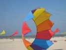
Patrick fait aussi un essai avec son grand bol, mais l'ancrage en béton est traîné sur le sol, alors il se contente de celui-ci, qu'il a créé lui-même !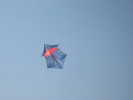
Le vent devenant trop fort (55 km/h en pointe... prolongée), je me contente de mon Rokkaku, il ne faut pas casser les oiseaux trop vite ! Il a les joues bien creuses, mais tient en l'air. La recette : pas de cambrage, c'est le vent qui s'en occupe, très cabré, et réglé au mm (1/2 cm d'écart et il chute régulièrement !).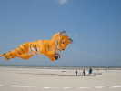
A l'autre bout des surfaces, un beau tigre se déploie avec jouissance au-dessus d'un désert bien lisse !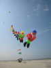
On peut admirer aussi un train de petits nains...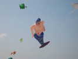
Dans le même coin, une sirène semblable à celles de Marco, avec de plus petits bras, mais des avantages plus... avantageux !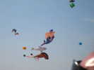
Une ligue a dû protester car on verra apparaître... passagèrement... une version plus respectable !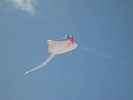
Les raies de Peter Lynn ont maintenant une nouvelle forme bien plus stable, avec le bout des ailes relevés !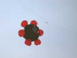
Les ColoursInMotion ont aussi fait tourner cette chose bizarre qui comprend de petites sphères gonflées autour d'une grosse. C'est la grosse qui gonfle les petites par des trous périphériques.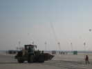
Au soir, je vois au loin Ludo qui a monté son dragon, mais il l'aura redescendu avant que je n'arrive plus près !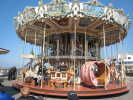
Bon, un petit tour sur la promenade, le manège est là comme tous les ans, avec sa musique d'époque genre orgue de barbarie !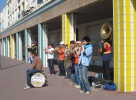
Un orchestre joue contre les arcades. Il est intitulé la Fanfare Piston, et effectivement, sous-titré Ecole Centrale de Lyon ! Sans doute des étudiants en vacances qui se font un peu de thunes !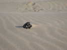
J'arrive au camion, et là, je m'aperçois que je n'ai plus mon téléphone ! Angoissant, d'autant que j'attends un coup de fil important ! Après quelques démarches à l'OT et aux postes de secours, je retourne près du cabanon, et là, à 20 m, je le vois ! Le vent a bien lissé le sable et le téléphone émerge comme un iceberg ! OUF !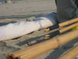
Ce matin, Daniel va réparer le Saconney qui a roulé dans une bourrasque et cassé quelques bambous. Avec des chutes conservées, des raccords, du Scotch pour régler le jeu et de la ficelle, il sera comme neuf...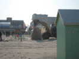
Le vent chasse le sable de sous les cabanons qui penchent de plus en plus ! Pour prévenir, un chargeur prend le sable sur la bosse qui s'est formée derrière, et le remet... sur le toit du cabanon d'où il se répartit comme il veut...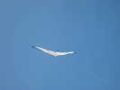
Le vent a baissé, plus de Rokkaku, je peux remettre mon Albatros1 ! L'Albatros 2 reste trop sensible pour cette force...